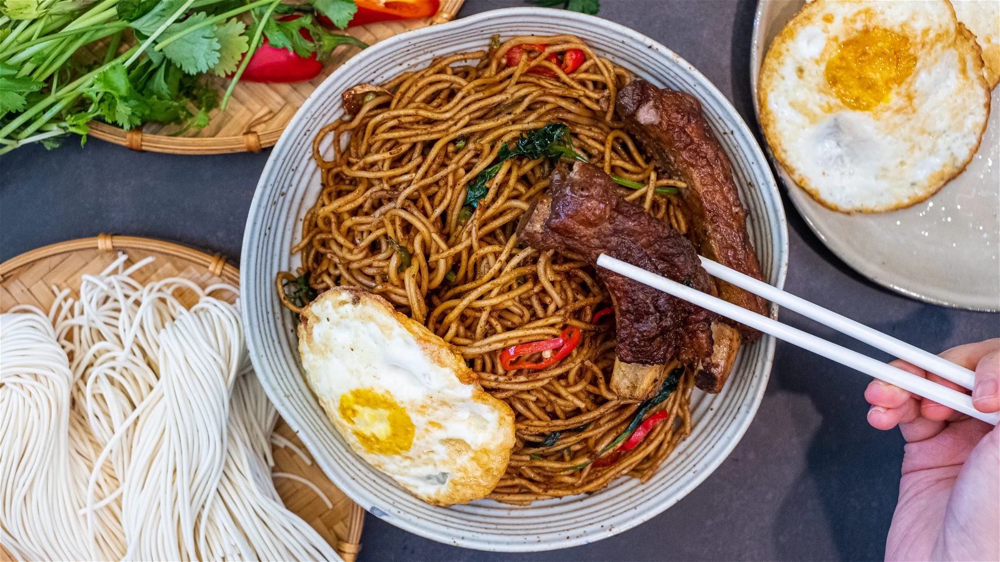

Pork Rib Noodles

Description
Pai Gu and Mian mean ribs and noodles. Men is the cooking method that I am excited to show you. The ribs are braising at the bottom, which lifts up the noodles so they can be steamed right above that. In the end, we will mix everything together, they will be really flavorful and delicious. This is a super easy dinner meal and serves a whole family.
Servings
Serves 4 people
Ingredients
- 2 lbs. of pork ribs
- 1 tbsp of vegetable oil
- 5 cloves of garlic
- 5-6 slices of ginger
- 1.5 tbsps. of sugar
- 1/4 cups of Chinese cooking wine
- 1/4 cups of soy sauce
- 1 tbsp of dark soy sauce
- 2 cups of hot water
- 1 star anise
- 1.5 tsps. of Sichuan peppercorn
- 1 cinnamon stick
- 2 bay leaves
- A few red dried chilies optional
- 1 lb of fresh noodles
- 8 oz of yard beans
- Fresh red chili and cilantro as garnish
Products Used
A Clay Pot
Steps
- Use a paper towel to grab the silver skin on the back of the ribs and rip it off.
- Slice the ribs in between the bones into individual pieces.
- Pre-heat a heavy duty cookware until hot (recommend a clay pot or a dutch oven). Add cooking oil and brown the ribs until both sides are golden brown. This will take a few minutes on each side over high heat.
- While pan frying the second side of the ribs, you can add the garlic, ginger and sugar. Let them cook with the ribs until fragrant. Mix until the sugar is melted.
- Add Chinese cooking wine, soy sauce, and dark soy sauce. Pour in 2 cups of boiling hot water. Adjust the position of the ribs so they stay below the water.
- Put the spices (star anise, Sichuan peppercorn, cinnamon stick, bay leaves, and red dry chilies) into a spice bag and add it to the clay pot. Simmer on low heat for 50 minutes or until the ribs are tender.
- 50 minutes later, check the liquid amount. It should be just a little bit below the ribs. Everybody’s stove and cookware is different. If you have too much liquid, crank up the heat to reduce it. If you have too little, add more hot water. Mine is perfect.
- Add the yard beans. Loosen up the noodles and lightly place them into the clay pot. Do not pad it down. You want it to be airy and fluffy, which allows circulation and ensures even cooking. Put on the lid. Switch the heat to medium-low and let it cook for 5 minutes.
- This is the “Men 焖” technique that I mentioned in the beginning. The noodles are not touching the braising liquid directly, they are lifted by the ribs and cooked by the steam. The texture is completely different than boiled noodles - pleasantly chewy and firm.
- 5 minutes later, give it a nice mix to combine the sauce with the noodles. Keep an eye on the sauce amount. When you see there is no more sauce at the bottom, turn off the heat. If you continue to cook, it will start to stick to the bottom. Add some red chilies and cilantro as garnish.
- Enjoy!!